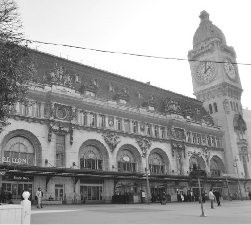

Ở Paris có nhiều nhà ga. Tôi không nói đến những ga tàu điện ngầm vì thứ ấy có hàng trăm cái. Tôi nói đến những cái ga theo định nghĩa cổ điển, tức là điểm đến và điểm đi của những chuyến tàu xa: tàu nhanh, tàu chậm, tàu ngày, tàu đêm.
Ở Hà Nội tôi chỉ nhớ có ga Hàng Cỏ (bây giờ đổi tên là ga Hà Nội) cũng mang dáng dấp của các nhà ga ở Pháp vì nó được xây dựng từ thời Pháp thuộc. Tôi đã có biết bao kỷ niệm với ga Hàng Cỏ mà có lẽ tôi sẽ kể ở một cuốn sách khác.
Còn ở Paris, những ga như vậy rất nhiều. Với một thành phố hiện đại và phát triển, đặc biệt là ngành đường sắt phát triển, việc xây dựng các nhà ga là điều quan trọng. Ở mỗi hướng đông tây nam bắc của Paris đều có các nhà ga lớn, là đầu mối cho hàng ngàn chuyến tàu ra vào mỗi ngày.
Những công trình kiến trúc và nơi hội tụ cảm xúc dâng trào.
Các nhà ga ở Paris không chỉ đơn thuần là nơi đón đưa các chuyến tàu. Mỗi nhà ga cũng là một công trình kiến trúc, một chứng nhân lịch sử. Rất nhiều nhà ga đã được đưa vào sử dụng từ gần 200 năm, có thể kể đến Gare de l’Est (Ga phía Đông), gare du Nord (Ga phía Bắc), Gare de Lyon, Gare Saint Lazare, các nhà ga này đều được đưa vào sử dụng trong khoảng từ 1837 đến 1849 - Thời kỳ cực thịnh của ngành đường sắt cổ xưa ở Pháp.
Nếu đến Paris, có thể bạn sẽ bắt buộc phải có mặt ở một trong những nhà ga ấy nếu bạn muốn đi tàu ra các tỉnh hay sang các nước châu Âu khác. Nếu không, hãy cố đặt chân đến một trong những nhà ga ấy, đó có thể cũng là một điểm dừng chân thú vị. Bởi như đã nói, mỗi nhà ga đều là một công trình kiến trúc cổ kính. Đường nét kiến trúc bên ngoài của các ga đều được giữ gần như nguyên vẹn, còn bên trong thì được nâng cấp, cải tạo để đáp ứng được rất nhiều những nhu cầu của thế giới hiện đại: mỗi nhà ga đều ít nhiều trở thành một trung tâm thương mại với hệ thống các cửa hàng, quán ăn, vừa nối trực tiếp với hệ thống tàu điện ngầm dưới lòng đất để tạo thuận lợi cho hành khách. Điều đó cũng sẽ khiến bạn thấy khâm phục với tầm nhìn quy hoạch của người thiết kế nhà ga từ gần 200 năm trước: sau ngần ấy thời gian, khung của nhà ga vẫn đủ lớn, đủ tiện lợi cho sự phát triển, cải tạo không ngừng ở bên trong. Và khâm phục những người quản lý, thiết kế thời hiện đại: họ phát triển mà vẫn bảo tồn, làm mới mà không chà đạp lên lịch sử.
Các bạn có thể giống tôi: tôi vừa thích lại vừa ghét cảm giác ở bên trong mỗi nhà ga, bến tàu hay sân bay. Bởi mỗi lần đặt chân đến hay rời đi những nơi này, trong tôi đều ngập tràn những cảm xúc khó tả. Đôi khi là hồi hộp đợi chờ ai đó, có khi là háo hức một cuộc hành trình mới, khi thì căng thẳng lo lắng và vội vã vì sợ trễ giờ, lúc lại trì hoãn chậm chạp vì không muốn tiễn một người đi… Cũng một nơi ấy, cách nhau mấy ngày hay một tuần có khi là hai tâm trạng khác hẳn. Một tuần trước ta tưng bừng rộn rã háo hức mong đợi lên tàu để bắt đầu một chuyến đi. Một tuần sau thì mệt mỏi trở về, thấy trước mình là bộn bề cuộc sống đời thường, là nuối tiếc những gì còn chưa kịp làm, là thấy xa vời cái ngày lại xách va li đi chuyến mới. Mấy ngày trước ta đón một người, ngập tràn cảm xúc chờ đợi, yêu thương (những lúc ấy, tôi hay có thói quen vừa hút thuốt, vừa rút giấy bạc trong bao thuốc lá và viết vội lên đó một bài thơ giống như chép lại những nhung nhớ, đợi chờ dồn nén. Có ai đã từng nhận những bài thơ trên giấy bạc bao thuốc lá của tôi? Còn giữ không? Tôi nhớ hầu hết những bài thơ mình viết, trừ những bài viết trong hoàn cảnh ấy. Có lẽ tâm trạng căng thẳng hồi hộp và cảm xúc dâng trào khiến mình mất đi chút tỉnh táo. Và rồi bài thơ được tặng đi, mình chẳng nhớ dòng nào, chẳng nhớ mình đã viết những gì trong ấy.) Mấy ngày sau ta tiễn người đi, thê thảm giống như là mất nhau vĩnh viễn (mà đôi khi mất thật).

Gare de Lyon. (Ảnh: Tác giả).
Khung cảnh bên trong các nhà ga ở Pháp thường rất đỗi náo nhiệt, bởi vì người mua sắm trong các khu thương mại, người sử dụng tàu điện ngầm dùng nhà ga như lối ra vào, những người đến đón, tiễn và trung tâm của cái không khí ấy: những chuyến tàu. Mỗi chuyến tàu tốc hành của Pháp (TGV) là vài ngàn hành khách. Ngần ấy người, ngần ấy tâm trạng ùa vào, ùa ra. Tôi không biết có phải vì mình nhạy cảm quá không mà ở giữa những người ấy, tôi nghe thấy hết, cảm nhận được hết tâm trạng của từng người, những âm thanh, không chỉ là tiếng nói cười, tiếng chân bước mà cả nghe được tim mọi người đập mạnh, cả sự lưu thông của máu ở trong ven từng người một. Những cảm giác, âm thanh ấy nhân lên hàng ngàn lần, mạnh như ta đang đứng giữa một dàn giao hưởng trong nhà hát Opera (kiến trúc với các mái vòm rất cao của nhà ga Pháp càng làm cho tôi có cảm giác ấy) và âm thanh, cảm xúc mãnh liệt đến mức bao giờ tôi cũng thấy tức ngực, cơ bụng căng như bị ép chặt và tai hơi ù đi.
Thế mà, trong quang cảnh náo nhiệt ấy, giữa biển người như đàn kiến khổng lồ chạy qua chạy lại ấy, bao giờ cũng có những góc thanh bình, tĩnh lặng đến lạ lùng: một đứa bé ngủ gục, dựa đầu vào chiếc vali trên ghế băng, một quý ông ngồi vắt chân, nhâm nhi cà phê và thanh thản đọc báo, một cặp tình nhân không ôm hôn, chỉ đứng rất lặng nhìn nhau, như thể muốn nuốt trọn cả người kia vào trong đáy mắt, và tôi, đang hí hoáy viết những gì trên một tờ giấy bạc, viết không cần nghĩ, không sửa vì đơn giản là chỉ chép lại những gì đang tuôn trào. Thanh bình, tĩnh lặng đến kinh ngạc.
Bạn có bao giờ nghe thấy, nhìn thấy những điều ấy không?
Đã từng có một cuộc chia ly…
Trong suốt những năm ở Pháp, tôi có cơ man nào là kỷ niệm ở khắp các nhà ga, không chỉ ở Paris, ở các tỉnh mà còn ở những thành phố châu Âu khác, đặc biệt là ở London. Nhưng tôi sẽ vẫn còn nhớ mãi, ghi tâm mãi hai khoảnh khắc ở nhà ga mà giống như những chuyến tàu đi, tàu đến để bắt đầu hay kết thúc một hành trình, đã khép lại và mở ra một chương tình cảm trong cuộc đời tôi, thay đổi lối suy nghĩ và cách sống của tôi hay còn hơn thế nữa.
Trước khi rời Việt Nam tôi đã nói lời yêu với một người con gái. Trước đó có nhiều người con gái ngang qua cuộc đời tôi, có khi rất nhanh, có khi kéo dài sáu, bảy năm trời (và cũng là nguyên nhân chính cho những năm trung học đầy nổi loạn của tôi) mà không đi đến đâu. Nhưng tôi có rất nhiều bạn gái thân thiết, cô nào cũng có với tôi nhiều tình cảm, nhiều chia sẻ, tâm tình, kỷ niệm đến mức đều có thể là người yêu của tôi. Ở Hà Nội cũng có, ở tỉnh xa cũng có, bạn cùng học có, bạn xã hội cũng có. Nhưng cuối cùng lại chẳng có gì cụ thể. Có lẽ vì tôi là người đa tình, có người bảo tôi “đào hoa”. Hoặc có thể là cả hai hoặc không là gì cả. Tôi chân thành, tôi dành tình cảm cho nhiều người, nhưng có thể vì tôi nhát quá, ngốc nghếch quá. Hoặc vì tôi đa mang nhiều công việc, trách nhiệm, nhiều mối quan hệ đến mức không có thời gian để nghĩ lại xem tình cảm của mình với người ấy là gì. Hoặc vì tôi bất cần nổi loạn, “để lại sau lưng khắc khoải những bến bờ” hay hình ảnh của một gã trai tình cảm nhưng ngang tàng phá phách, lầm lì nhưng nóng tính, đa tài và đa tình mạnh đến mức không có cô nào nghĩ đến việc dám yêu tôi, hay dám để tôi yêu. Hoặc vì tôi có một lũ bạn trai thân nhau đến mức cứ một thằng ngấp nghé có người yêu là cả lũ phá hoại, sợ sẽ mất đi một thành viên trong nhóm, vì bị “gấu” quản lý. Có thể là vì ngần ấy thứ cộng lại.
Vào khoảnh khắc sắp rời xa, tôi bỗng cuống quít tự hỏi mình vô số điều: Liệu mình ra đi mà không nói với ai điều gì cả có phải là để lại sau lưng thêm những bến bờ khắc khoải không? Liệu trong số những bờ bến ấy, có một bờ bến đích thực của mình, mà bấy lâu nay mình ham vui hay bất cần không nghĩ đến không? Ra đi như thế có “nặng gánh” quá chăng?
Tôi không sợ mình ra đi mà không có ai để chia sẻ, vì tôi luôn có nhiều nơi để chia sẻ, tôi chỉ sợ mình đang phụ một người, đang khiến một người mòn mỏi đợi chờ tôi nói một câu. Nhưng người ấy là ai? Thật đấy, tôi đã hỏi mình như vậy. Bởi ở thời điểm ấy tôi không biết mình phải nghĩ đến ai.
Là cô gái tôi đã yêu điên cuồng trong suốt nhiều năm (và biết chắc cô ấy cũng yêu tôi) nhưng vì một lời hứa ngớ ngẩn và vô vàn những chuyện ngu ngốc khác mà không bao giờ tôi nói được lời đơn giản nhất mà cũng khó khăn nhất. Và tôi sẽ không bao giờ nói.
Là mối tình lãng mạn nhất mà tôi từng có, gặp mặt lần đầu như sét đánh, là cô gái đầu tiên khiến tôi phải làm thơ, phải hát tặng, phải ngồi hàng giờ làm tượng, vẽ tranh làm quà. Là người đã thay đổi tính nhút nhát của tôi trước đám đông và trước những người con gái?
Là cô bé đáng yêu ở xa Hà Nội, vài tháng mới được gặp một lần nhưng hầu như ngày nào chúng tôi cũng chuyện trò qua điện thoại, và lần nào đưa em ra ga hồn tôi cũng nặng trĩu như phải tiễn một phần lòng mình rời xa.
Là cô gái dưới tôi một khóa, đầy nghị lực và tình cảm khiến tôi rung động. Mỗi kỳ thi lại chép bài, soạn đáp án những môn học chung mang đến tận nhà tôi.
Là em, học cùng lớp nhưng kém tôi đến hai tuổi, cô “bé con” tôi chẳng để ý đến những năm cấp Ba, bỗng một ngày gặp lại, đôi mắt đẹp và sâu thăm thẳm đã khiến tôi sững sờ. Suốt mấy năm đại học, dù không học chung trường nhưng gần như ngày nào chúng tôi cũng phải gặp nhau (trừ những khi hờn giận hay tôi tỏ thói bất cần, hay tôi bị cuốn vào một cuộc phiêu lưu “sét đánh” nào đó). Cũng chính em là người đã khuyến khích động viên tôi làm luận văn để có tấm bằng loại giỏi, đã khích tướng tôi tham dự kỳ thi tuyển lấy học bổng đi Pháp, đã cố gắng thay đổi suy nghĩ của tôi muốn bỏ suất đi và thuyết phục được tôi dấn mình vào chuyến phiêu lưu.
Có thể bạn sẽ không tin, nghĩ tôi thổi phồng phóng đại (vì đàn ông hay thích khoe khoang những “chiến tích tình ái” của mình, dù nhiều khi chỉ là tưởng tượng), nhưng quả thực vào thời điểm ấy tôi có tình cảm với ngần ấy người con gái, rung động có thể ít hơn hoặc nhiều hơn, tình cảm có thể khác nhau nhưng đều sâu đậm. Có thể vì tôi đa tình mà hồn nhiên quá, dễ trải lòng mình ra nhưng lại không đủ dũng cảm để lựa chọn hay quyết định, hoặc ám ảnh về mối tình đầu tiên kéo dài đau khổ, chưa bao giờ bắt đầu nhưng cũng không bao giờ kết thúc kia khiến tim tôi như bị khóa lại ở một ngưỡng nào đó, không thể đi xa hơn, khiến tôi nghĩ mình sẽ không bao giờ còn có thể thuộc về ai được nữa và khiến người ta cũng chững lại, nghi ngờ.
Nhưng khi ấy không hiểu sao tôi bỗng bắt buộc mình phải chọn một người, có thể bởi vì tôi sẽ không còn có điều kiện để “đa mang” nữa, có thể vì tôi sợ người ta phải chờ đợi vô vọng một kẻ không ra gì như tôi. Và tôi đã chọn em, cô bé trung tâm của câu chuyện khiến tôi “xuất ngoại”. Tôi chọn em cũng vì tôi cảm thấy mình mang “nợ” với em sau tất cả những gì em làm cho tôi. Hoặc tôi sợ rằng một người giàu tình cảm như em, nếu quả thực đang yêu tôi thì việc tôi ra đi không nói năng gì có thể làm em sốc nặng không gượng lại được.
Chính bởi thế mà tôi đã sai lầm. Tình yêu không bao giờ (nên) là một toan tính, một lựa chọn (hay bất cứ sản phẩm nào khác của lý trí) trong bất cứ hoàn cảnh nào. Cũng không phải là thứ ta mang đi trả nợ hay để ban ơn. Nó chỉ nên được điều hành bởi duy nhất trái tim bạn, rung động của bạn. Đừng đặt ra đường đi cho tình cảm, mà chính nó sẽ dẫn đường cho bạn, giống như một câu thơ mà sau này tôi viết “Con tim yêu tự biết lối để đi/Tự biết lối đến bến bờ hạnh phúc” (Câu chuyện của những câu thơ này cũng thật tai ác, rồi bạn sẽ hiểu khi đọc đến phần cuối của câu chuyện này).
Cảnh tỏ tình của tôi có lẽ cũng vì thế mà giống như một phiên cảnh tồi tệ nhất trong một cuốn phim serie hạng B. Nó miễn cưỡng và thô cứng, vụng về thiếu tự nhiên. Và em, có lẽ cũng bối rối vì hoàn cảnh, cũng không đủ tỉnh táo trong thời điểm mà quá nhiều thứ trộn lẫn ập đến quá nhanh ấy, đã không biết mình đang nghĩ gì và phải nói gì. Em không nhận lời, cũng không từ chối, nhưng nói “Em sẽ chờ”.
Ngày hôm sau tôi lên máy bay với 80 cân hành lý và Ba Ngàn Cân “Em sẽ chờ” nặng trĩu trên vai.
Những ảo ảnh của một “mối tình” không có thực
Trong rất nhiều ngày tháng, ba tiếng ấy đã là động lực, là mục tiêu của tôi những lúc khó khăn. Tôi lấy đó là mục tiêu cho mình, tự hứa với mình sẽ chiến thắng trở về để không phụ một người đã và sẽ chờ tôi.
Trong rất nhiều ngày tháng, tôi đã tự mê hoặc đầu óc mình bằng ba chữ ấy, đã phát điên lên vì thứ tình cảm bị chính tôi phóng đại lên dành cho em. Đặt chân đến Paris, tôi chỉ nghĩ đến em, đến viết thư, làm thơ gửi cho em, đến “khủng bố” hòm thư của em bằng trăm ngàn những dấu “?”, “!!!!” những “xxxx” thay cho những nụ hôn. Tôi không ăn không ngủ khi không nhận được thư, phát sốt lên khi đọc một lời yêu thương, thê thảm khi thấy một dòng viết lạnh lùng của em. Giá thời ấy phương tiện trao đổi thông tin phong phú và thuận lợi như bây giờ, để tôi và em có thể thoải mái trao đổi với nhau sau khi đã vượt qua cú sốc của cuộc chia ly, hay có điều kiện để nói với nhau nhiều hơn, để không bị đánh lừa bởi sự thiếu thốn thông tin thì có lẽ mọi chuyện đã được giải quyết nhẹ nhàng hơn. Nhưng thời ấy internet vẫn còn là thứ xa xỉ, check mail và viết một cái mail ở Hà Nội khi ấy không phải dễ dàng và nhất là không nhanh chút nào. Gọi điện thoại lại mất quá nhiều tiền. Tôi chỉ cho mình vài phút mỗi tuần, chỉ kịp nói vài câu. Chính cái thiếu thốn ấy lại càng khiến cho ta mong nhớ đến phát cuồng, không biết rằng ta đang tự dối lòng.
Mà cái gì không thật lòng thì không kéo dài được lâu, ít nhất là với em. Những ngày đầu tiên em viết cho tôi mỗi ngày một lá thư tay, đợi đủ bảy ngày thì gửi. Mỗi ngày vài lá thư điện tử. Em kể đã khóc rất nhiều vì nhớ tôi, đã thức nhiều đêm để nghĩ đến tôi, đã ngất đi vì căng thẳng và thiếu ngủ trong phòng thi tuyển cao học, đã chia sẻ với tôi đủ thứ hồi hộp, nhớ mong…
Rồi dần dần thư tay thưa đi, thư điện tử cũng ngắn dần lại. Đó có lẽ cũng là lúc em bắt đầu có hình bóng của một người khác. Nhưng điều ấy mãi sau này tôi mới biết.
Tôi nghĩ mình là người mắc sai lầm đầu tiên trong câu chuyện tình yêu tưởng tượng ấy. Và sau này tôi đã vui vẻ trở lại với em như một người bạn bình thường cũng bởi tôi hiểu em, trân trọng những tình cảm em đã dành cho tôi. Nhưng tôi sẽ mãi mãi trách em, giận em vì em đã không đủ thành thật với tôi trong suốt một thời gian dài. Vào những lúc mà tôi cần em nhất, hay ít ra, cần đến sự chân thành của em nhất.
Nãy giờ chỉ mới là tiền đề cho câu chuyện đầu tiên của chương này, mà đã dài thế. Tôi đã cố gắng tìm cách ngắn nhất để diễn tả những gì muốn nói. Câu chuyện sắp kể lại không chỉ liên quan đến riêng mối quan hệ với một người con gái, mà còn là một trong những câu chuyện phức tạp nhất vẫn chưa có lời kết trong đời tôi.
Những người bạn và câu chuyện “đồng tiền xương máu”
Bây giờ tôi trở lại với Paris với những năm tháng khó khăn.
Tôi không có nhiều thời gian, nhưng luôn có nhiều bạn. Bao giờ cũng thế, kể cả ở Paris. Bởi tôi luôn mở lòng với mọi người, tôi giúp bất cứ ai bằng bất cứ cách nào tôi có thể nếu tôi thấy người đó thật sự cần. Tôi không chỉ mở lòng, mà mở cửa nhà đón chào bất kỳ ai muốn đến hay cần đến. Bởi cho đến lúc ấy, tôi chỉ đơn giản nghĩ rằng nếu mình thật lòng với người, họ cũng sẽ thật lòng với mình. Cũng vì tôi tin vào trực giác của mình, tin vào kinh nghiệm từng trải, nếm mùi đời với đủ hạng người của mình để nghĩ rằng không có gì gian dối qua được mắt tôi.
Hồi ấy mới sang, để tiết kiệm tiền nhà, tôi chung phòng với cậu bạn cũng nhận học bổng cùng đợt với tôi, mặc dù trước kia chúng tôi chưa bao giờ thấy hợp nhau và chơi với nhau nhiều. Sau này thấy một cậu em cùng trường sống vất vưởng ở ký túc xá, gầy đói vì không biết nấu ăn, tôi lại kéo đến nhà ở chung. Phải nói thêm rằng, ai ở chung nhà với tôi cũng chỉ một thời gian sau là tròn xoe, và đứa nào cũng kêu “Tại anh nấu ăn ngon quá, anh chăm cho em ăn còn hơn mẹ em”.
Ít hôm sau nữa thì cậu em ấy dẫn về một người, giới thiệu là anh họ, rất giỏi, rất tốt. Nhìn mặt không được thiện cảm lắm, nhưng sau một hồi nói chuyện thấy có vẻ cởi mở, tôi cũng coi như bạn bè. Người ấy không sống cùng chúng tôi, nhưng rất hay đến ăn uống, ngủ lại. Vì là “người nhà” của anh em trong nhà nên tôi đối đáp rất chu đáo, không một chút nghi ngờ.
Rồi ba anh em trong nhà chúng tôi tham gia một chuyến du lịch của một tổ chức từ thiện, không mất tiền. Trong đoàn đi có nhiều người Việt Nam từ nhiều vùng khác của nước Pháp. Chúng tôi làm quen và kết bạn với một anh bác sĩ từ Việt Nam qua thực tập một năm, ở cách Paris vài trăm cây số. Sau chuyến đi anh em cũng quý nhau, mỗi lần anh lên Paris có việc lại ghé qua nghỉ ở nhà tôi, lần nào đến anh cũng mua quà, mua đồ ăn ngon vì biết chúng tôi không có tiền, chỉ toàn mua những thức ăn rẻ mạt nhất.
Vài tháng trôi qua, tôi quay cuồng trong guồng quay đi học – đi làm, rồi những vất vả, những tai nạn liên tiếp ở nhà hàng, những uất ức với ông chủ, những thất vọng ngày càng nhiều trong mối quan hệ với em khiến tôi càng trở nên “tâm trạng”, tôi chẳng quan tâm nhiều đến chuyện đời, mỗi đêm đi làm về, thấy có khách đến chơi thì làm đồ ăn rồi ngồi uống rượu tiếp chuyện, uống đến say mèm rồi lăn ra ngủ.
Vì đi làm chui nên tôi chỉ nhận tiền mặt. Làm nhiều đến nỗi tôi không có thời gian gửi tiền vào tài khoản, mỗi lần nhận lương về thì cất vào cái cặp để ở ngăn tủ trong phòng ngủ, cũng là phòng khách, phòng ăn của chúng tôi. Cho đến một buổi sáng chúng tôi có giờ lên lớp muộn hơn thường lệ, hai đứa cùng phòng rủ nhau lên trường sớm đọc e-mail, lúc ấy tôi định lấy số tiền dành dụm gần ba tháng của mình để đi gửi vào tài khoản đã cạn tiền của tôi. Tôi mở cặp, chỗ để tiền chỉ còn cái phong bì trống không.
Cả đời tôi không quên lúc ấy. Mồm há hốc, khô khốc. Tôi không biết mình phải làm gì, phải hét lên, phải đập phá, khóc lóc hay phát điên lên. Số tiền kiếm được bằng mồ hôi, rất nhiều mồ hôi và máu, rất nhiều máu của tôi đã biến mất. Số tiền mà tôi dự định dành dụm cho năm học tới, số tiền mà tôi định trích ra gửi về trả nợ cho mẹ. Số tiền mà không có nó, ngày mai tôi chưa biết sống bằng gì. Nhưng tôi vẫn nhớ rằng khi đó, cảm giác mất tiền đối với tôi không quá ghê sợ, cái khiến tôi bỗng đau đớn, bỗng bẹp dí ra như người rơi từ nóc nhà cao tầng xuống đất là cảm giác mất niềm tin, bị phản bội. Sở dĩ tôi vẫn còn sống can trường được cho đến lúc ấy, bất chấp mọi khó khăn là vì tôi có niềm tin, nhưng bây giờ điểm tựa cuối cùng của tôi cũng đã lung lay, tôi không biết dựa vào đâu.
Nhưng tôi không nói gì cả, không đập phá cũng không khóc. Tôi ngồi yên, mặt tái đi. Cậu bạn và cậu em ở chung chạy vào, hiểu ngay vấn đề vì họ cũng biết tôi để tiền ở đó. Họ im lặng không dám nói gì, lúc sau mới bảo không lấy tiền của tôi, nếu tôi muốn khám, muốn kiểm tra thì cứ tự nhiên. Tất nhiên tôi không khám hay kiểm tra làm gì. Tôi tin họ như tin chính mình. Họ có hoàn cảnh tốt hơn tôi, không đến nỗi vất vả như tôi nhưng cũng đi làm thêm, cũng hiểu thế nào là kiếm đồng tiền ở nơi xứ người, không bao giờ họ dám lấy những đồng tiền “xương máu” ấy. Vậy thì ai?
Hôm ấy là thứ Hai. Trước đó ba ngày, tôi vừa lĩnh lương ở hai nơi làm việc, khi cho vào, số tiền trước đó cũng vẫn còn nguyên. Tối thứ Bảy có thêm người “anh họ” của cậu em cùng nhà đến ăn cơm, có cả anh bác sĩ từ dưới tỉnh lên chơi, còn mang theo một con gà rất ngon. Sáng sớm Chủ nhật tôi và người bạn đi làm sớm từ sáu giờ, chỉ còn cậu em ngủ ở nhà với hai ông anh.
Cậu em lập tức khẳng định: “Em chắc chắn anh họ em không lấy, anh ấy đi làm cho ngân hàng, nhiều tiền lắm. Anh ấy là tiến sĩ, lại giỏi tiếng Pháp. Anh ấy không cần tiền. Vả lại, lúc anh ấy ở đây đều có em cả.” Tôi cũng không thể nghĩ là anh bác sĩ vì anh luôn tỏ ra rất chân thật, cũng là người có học, lại có vẻ chi tiêu rất thoải mái.
Tôi ngồi bình tĩnh lại rồi bắt đầu lật lại từng chi tiết từ đêm thứ Sáu. Có điều lạ là anh bác sĩ lần này đến chơi không vui vẻ như mọi khi, liên tục than thở ăn chơi quá hết tiền, bây giờ sắp đến ngày về không có cả tiền mua quà, may có ông bạn (hay thầy) người Thụy Sỹ cho (vay) ít tiền. Uống rượu xong, lại thức khuya nên ai cũng ngủ say. Nhưng vào lúc năm rưỡi sáng tôi bật dậy theo thói quen để đi làm (không cần để đồng hồ báo thức) thì thấy anh đang nằm nhưng mắt mở nhìn tôi chăm chăm. Tôi hỏi anh sao không ngủ, anh nói “không ngủ được”.
Tôi hỏi cậu em: “Hôm qua anh ấy về lúc nào” thì nó kêu “Ơ, em tưởng anh ấy về cùng lúc anh đi làm, vì em tỉnh dậy đã không thấy anh ấy rồi.” Kỳ lạ, ngoài hành lang nhà tôi luôn có khóa, thường khách phải đợi chủ nhà ra mở cửa tiễn về. Tôi chạy ra gần cửa ra vào, thấy có một cái cặp tài liệu to, anh còn để quên lại. Có lần anh cũng để quên cái gì đó, nhưng gọi điện đến ngay nhờ cất vào một chỗ, lần sau anh đến lấy. Nhưng lần này thì không. Mở cặp tài liệu ra thấy đầy ắp những báo cũ, những giấy tờ linh tinh, không có chút giá trị nào. Chỉ ngần ấy chi tiết là đủ để tôi hoàn thành lập luận của mình. Tôi bảo: “Anh phải đi tìm ông ấy”.
Nhưng khi ấy tôi mới nhớ ra: ngoài tên và số điện thoại (tất nhiên lúc ấy tôi không thể gọi điện cho anh ta), chúng tôi chẳng biết gì về anh cả. Chỉ biết thành phố anh đang ở, tên bệnh viện anh đến thực tập và biết rằng từ nhà anh ở đi bộ đến bệnh viện chừng 10 phút.
Chuyến đi “cuộc đời”
Tôi vẫn bảo “Anh sẽ đi, kiểu gì anh cũng tìm ra”. Cậu em cùng nhà đòi đi cùng vì sợ tôi không giữ được bình tĩnh nếu có chuyện gì xảy ra. Tôi đồng ý. Ra ga, tôi dốc số tiền còn lại mua hai vé khứ hồi. Và chúng tôi lên đường. Đến nơi là 10 giờ sáng. Vì đi vội vàng, cả hai chẳng có hành lý gì, cậu em còn không mang cả tiền theo, nó cũng không biết rằng khi mất hết khoản tiền dành dụm thì tôi thành người “vô sản”, nghèo đến mức không còn đủ tiền để ăn hai bữa. Tôi tính toán, mua một chai nước và một túi bánh mì khô. Ăn vào xong uống nước thì nó sẽ nở ra đỡ đói. Với chai nước và túi bánh mì ấy, hai anh em tôi đi bộ tìm bệnh viện (cách nhà ga chừng 10 cây số) rồi lấy đó làm tâm điểm cho một vòng tròn có bán kính là 10 phút đi bộ, chúng tôi đi từ tòa nhà này sang tòa nhà khác, từ phố này sang phố khác và tìm tên anh bác sĩ trên các hòm thư. Tôi không đến thẳng bệnh viện vì sợ có thể chuyện sẽ ầm ĩ lên khiến người kia mất mặt, trong khi mình không có chứng cứ gì. Khi ấy là đầu đông, ngoài trời chừng 00C, rét cóng. Hai anh em tôi lang thang như thế đến sáu giờ tối. Đôi chân trở nên nặng nề và buốt cóng như hai tảng đá, mắt mờ không nhìn rõ tên người, cậu em gần như không lê nổi, tôi phải kéo nó lên những con dốc, còn tôi gần như muốn bỏ cuộc vì kiệt sức và đói. Đúng lúc đó, tôi tìm thấy cái tên mà chúng tôi đang tìm kiếm giữa hàng trăm hòm thư của một tòa nhà 20 tầng. Ông trời hóa ra không thể nhắm mắt trước quyết tâm của tôi. Chúng tôi nhìn số hòm thư để đoán số phòng, đợi một người đi vào để lọt vào trong tòa nhà (ở Pháp các tòa nhà cao tầng luôn có khóa số, người ngoài không thể tự nhiên ra vào).
Rồi đứng trước cửa nhà anh, hít một hơi thật sâu, tôi bấm chuông. Anh ra mở cửa, thoáng thảng thốt nhưng gần như không quá ngạc nhiên, cũng không hỏi làm thế nào tìm được nhà anh, chỉ bảo “xuống chơi sao không báo trước”. Tôi vào nhà, ngồi xuống và xin phép bắt đầu một câu chuyện. Tôi nói: “Hôm nay, em có một câu chuyện khó hiểu, xin kể với anh. Anh hơn tuổi em, hiểu biết nhiều hơn, khi nghe xong chuyện xin cho em biết anh nghĩ gì, khuyên em nên làm gì và đi tìm ai.” Rồi tôi kể câu chuyện mất tiền của tôi, về những chi tiết lạ lùng trong cách cư xử của anh, những câu hỏi của tôi về sự “biến mất” không một lời nhắn nhủ của anh, về cặp tài liệu đầy giấy lộn mà anh để lại như thể con tin, nhưng không hề gọi điện lại. Trong lúc kể chuyện, tôi nhiều lần tìm cách nhìn thẳng vào mắt anh, như cố tìm lấy một chút chân thành trong ấy, nhưng anh tránh ánh mắt của tôi.
Câu chuyện kết thúc. Anh thở dài. Không phản kháng, không uất ức, không lu loa. Tôi đã chuẩn bị tinh thần đối diện với việc anh hét lên, mắng tôi là đồ mất dạy, đồ vu khống hoặc có thể xông vào đánh tôi. Tôi thậm chí đã nghĩ đến tình huống anh xông vào tôi với thứ vũ khí gì đó vớ được. Tôi không sợ cho tôi, tôi có võ, mà tôi sợ cho anh (thật sự). Thường ngày khi tôi nổi nóng lên đã khiến người ta phải khiếp sợ rồi, huống chi bây giờ, tôi như con thú bị thương. Tôi với cậu em bí mật ghi âm cuộc nói chuyện ngay từ đầu để đề phòng những tình huồng xấu xảy ra.
Nhưng không có. Anh có lẽ không thể làm như thế trước sự điềm tĩnh và cách nói nhẹ nhàng của tôi.Anh bối rối thôi, bảo: “Anh không lấy, anh thề là anh không lấy. Nhưng em nói đúng, trong hoàn cảnh của em thì nghi phạm chỉ có thể là một người. Là anh. Có thể số anh đen đủi mà mọi thứ đều chống lại anh. Anh đúng là không có tiền nhưng bạn anh đã gửi cho. Khi ra về vì không muốn đánh thức cậu em anh nên anh tự lấy khóa ra mở cửa, sau đấy quay lại cất chìa và ra ngoài sập cửa lại. Cặp tài liệu không có gì quan trọng. Định bao giờ tiện thì ghé qua lấy, em có lỡ vứt đi cũng không sao.” Đó là tôi tóm tắt lại ý chính, còn lúc ấy, anh không nói rõ ràng rành mạch và ngắn gọn được như thế. Anh lúng túng, nhiều câu nói còn không nghe rõ như thể anh nói với mình anh.
Tôi kết luận: “Em không xuống đây để đòi tiền, không kết tội anh lấy tiền. Dù tiền ấy là mồ hôi, là máu của em, em cũng không làm ẩu. Em đến kể một câu chuyện để xin lời khuyên. Hỏi một câu để đợi được trả lời. Em đi mấy trăm cây số và mất một ngày tìm nhà anh chỉ để gặp anh khi anh không có sự chuẩn bị tinh thần hay đề phòng nào trước, để được nhìn vào mắt anh và nghe câu trả lời của anh. Bây giờ em có câu trả lời, anh nói không lấy tiền của em (dù khi trả lời anh ấy không nhìn vào mắt tôi, mặc dù anh biết tôi đang tìm cách nhìn vào mắt anh). Em nghĩ không còn gì để nói thêm nữa, xin phép anh em về”.
Anh bảo giờ này không chắc còn tàu về Paris nữa, hay là ngủ lại mai về. Tôi bảo tôi đã xem giờ tàu rồi, vẫn còn. Nếu không, tôi ngủ khách sạn chứ trong hoàn cảnh này làm sao tôi ngủ đêm lại nhà anh được. Rồi chúng tôi ra về. Nhưng tôi nói dối. Đúng là tôi đã xem giờ tàu, vì thế tôi biết chắc chắn giờ đó quay lại thì không kịp chuyến cuối cùng nữa. Tôi cũng nói dối việc nghỉ tại khách sạn. Trong túi tôi chỉ còn vài đồng. Nhưng tôi biết chắc là tôi không thể ở lại, những chuyện khác tính sau. Thật ra khi ấy đầu óc rối bời, tôi chỉ biết là mình phải ra đi chứ chưa lường hết những gì có thể đến. Thiếu chút nữa tôi đã có thể hại chết cả hai anh em.
Đêm, chúng tôi đến ga. Đã hết tàu về nhưng chúng tôi vẫn ra ga trú chân. Số tiền còn lại của tôi chỉ đủ mua một suất ăn nhanh, hai anh em chia đôi. Đói. Hai chúng tôi đều có sức ăn rất tốt. Cả ngày vật vờ đã gần như nhịn đói. Đêm đến chỉ có một gói khoai tây chiên bé xíu và một cái bánh kẹp chia đôi. Tôi nhìn cậu em, xin lỗi vì đã lôi cậu vào cuộc phiêu lưu này. “Anh hết tiền, không còn lấy một xu”. Nó gần khóc, bảo anh em có nhau anh đừng lo. Nếu chết thì cùng chết. Câu nói ấy trong hoàn cảnh đó hóa ra không hề phóng đại chút nào.
Bởi không chỉ có đói. Đói chúng tôi còn chịu được. Ga ở các vùng quê không mở suốt đêm như Paris. Ở đây không có tàu đêm, 12 giờ là ga đóng cửa. Vậy là chúng tôi bắt đầu một đêm khốn khổ. Trời -20C. Cái đói, cái mệt đã ngấm, nhưng chúng tôi cứ phải lang thang vì dừng lại thì lạnh không chịu nổi. Có lúc chúng tôi chui vào đứng trong cabin điện thoại, nhưng kính lại hở dưới chân nên gió lùa buốt không đứng nổi. Chúng tôi còn đứng một chân, giơ chân kia cao lên cho khỏi buốt. Một lúc lại đổi chân, nhưng cũng không được bao lâu. Đã hành xác cả ngày rồi mà đêm còn đòi tập yoga?
Hai giờ sáng, không còn sức để đi nữa, chúng tôi tìm thấy một tòa nhà mà trước sảnh có cái thảm chùi chân. Lúc ấy nghĩ, sao chân người không to hơn để người ta làm cái thảm rộng một chút. Chúng tôi bảo nhau nằm xuống, ít nhất lưng không phải đặt thẳng lên nền đá hoa. Cái lạnh khủng khiếp bắt đầu ngấm vào xương tủy. Chuột rút khắp nơi vì cơ bắp phải căng lên, gồng lên chịu lạnh quá lâu rồi. Tôi còn đỡ, cậu em như bị sốt rét. Người nó run bắn lên. Nó rít qua hai kẽ răng đập vào nhau lộc cộc: “Anh ơi, em lạnh chết mất!” Tôi nhường nó cái áo nào mà tôi có thể cởi, thậm chí tìm được chiếc khăn mùi xoa trong túi tôi cũng mang ra đắp cho nó. Nhưng áo nào cũng chỉ đắp được một lúc lại lạnh như cũ. Khi ta đắp chăn, chẳng qua cũng là để giữ lại hơi ấm của cơ thể ta tỏa ra thôi, bản thân cái chăn không tự ấm. Cơ thể chúng tôi khi đó có lẽ gần với nhiệt độ ngoài trời hơn là với 37 độ bình thường của thân nhiệt con người. Có lúc tôi thấy nó gần như không thở nữa, chân tay cứng đờ. Tôi phải nằm đè lên nó, lấy thân mình làm sưởi. Một lúc, nó mở mắt, bảo: “Ấm hơn, dễ chịu. Nhưng nặng quá cũng không thở được anh ạ”.
Thời gian như chậm lại. Bên ngoài tuyết bắt đầu rơi. Gọi là “bên ngoài” thôi, thực ra chúng tôi đâu ở “bên trong”, chỉ có một chút mái hiên của tòa nhà, còn xung quanh trống trơn. Gió thổi những bông tuyết bay vào, rơi trên mặt, rơi cả trên môi tôi, mà tôi không thấy lạnh, chỉ thấy hơi mằn mặn. Cậu em nằm yên, còn tôi bắt đầu nói những câu chuyện vu vơ, rồi hát. Tôi hát, bằng những sức lực cuối cùng của mình. Bạn sẽ bảo tôi còn khỏe và yêu đời đến thế ư, không phải, đấy là tôi tranh đấu để sinh tồn. Lúc ấy dù kiệt sức, tôi biết mình cần làm gì đó để không ngủ thiếp đi, để có thể canh chừng cậu em. Thỉnh thoảng thấy nó yên lặng quá, tôi sờ mũi nó kiểm tra, nhìn xem lúc nào nhà ga sáng đèn trở lại thì lôi nó vào trong. Nằm đấy, nếu nhắm mắt lại, có thể chúng tôi sẽ thiếp đi, không bao giờ còn dậy được nữa.
Và tôi nằm, nghĩ miên man về cuộc đời mình, về những câu chuyện kỳ lạ sao cứ đến tìm mình, như thể ông trời thấy thử thách tôi vẫn còn chưa đủ, và nghĩ về em. Trước khi đi, trong lúc đợi tàu, tôi đã viết cho em, tôi không nói rõ chi tiết mọi chuyện, nhưng lá thư tôi gửi đi giống như một tiếng kêu tuyệt vọng, một lời cầu cứu. Những chuyện ấy tôi không kể với gia đình, với mẹ, vì mẹ sẽ lo lắng, sẽ khóc lóc và mọi chuyện có thể loạn hết cả lên. Còn em, tôi chỉ mong nhận được từ em một lời động viên, chia sẻ. Một lời thôi là đủ để tôi lấy lại niềm tin.
Năm giờ sáng thì ga sáng đèn đón chuyến tàu đầu tiên. Tôi lôi cậu em dậy. Chúng tôi gần như không đi được, xương cốt cứng như đá, phải nhích từng chút một. Chúng tôi vào ga, lên chuyến tàu sớm nhất để quay về. Chưa bao giờ sự ấm áp lại có thể khiến ta sung sướng đến thế. Về đến nhà ga ở Paris, cậu em bảo: “Về nhà đi anh. Chắc em ngủ luôn đến ngày kia”.
Cái kết của một “cuộc tình”
Nhưng chỉ có nó về. Tôi còn ở lại ga. Hồi ấy các ga lớn ở Paris bắt đầu có những điểm dùng internet miễn phí, ta có thể đọc mail và xem vài thông tin đơn giản. Vì đây là hình thức mới nên nhiều người muốn dùng, trước mỗi điểm internet là một hàng người dài lặng lẽ đứng chờ. Tôi không biết mặt mũi thằng bé (hay con bé) tình yêu ra sao mà lại khiến người ta có thể làm những điều như thế. Dù có thể cái tình yêu của tôi khi ấy là ảo tưởng, nhưng nó thúc đẩy tôi làm những điều không tưởng. Lúc ấy nếu như có cơn gió mạnh thổi đến chắc tôi cũng không đứng vững nổi, tôi như muốn phát điên lên vì những suy nghĩ và lo lắng quay cuồng. Vậy mà tôi đứng đó, kiên nhẫn nhích từng bước một. Chờ từng người, từng người qua, có cả những người có lẽ mới sử dụng máy tính nên chưa thuộc cả bàn phím, dò dẫm từng chữ cái một để viết một lá thư rất dài.
Đợi gần hai tiếng. Rồi cũng đến lượt tôi. Tôi hồi hộp đến thắt cả tim khi mở hòm thư của mình. Có mail trả lời của em. Tôi mở ra và đọc. Tôi đọc một lần rồi đọc lại. Đọc thêm lần nữa. Tôi không hiểu. Rõ ràng là em trả lời mail của tôi. Rõ ràng là em nghe thấy tiếng kêu tuyệt vọng của tôi. Nhưng em viết những gì thế. Đó không phải là một hồi đáp, cũng không phải là bức thư để em gửi đi sự quan tâm của mình. Em viết lãng đãng, ngơ ngẩn. Hãy hình dung như bạn rút lòng rút ruột kể về nỗi đau khổ thất tình của mình với cậu bạn để xin nó một lời chia sẻ. Nghe xong nó cười lớn rồi bảo: “Sáng nay tao ăn bát phở, sao ngon thế”. Lá thư của em cũng đại loại như vậy. Tôi hình dung ra em ngồi trước máy tính, đọc thư của tôi rồi trả lời nhưng trong đầu nghĩ chuyện khác, nghĩ đến người khác. Ít lâu nay trong thư của em đã có những dấu hiệu lãng đãng, vu vơ, đã thường xuyên xuất hiện người ấy, nhưng tôi cố gạt đi, tìm cách đánh lừa mình như thể cố giữ lại cho mình một điểm tựa giả tạo.
Còn bây giờ tôi hiểu, đột nhiên tôi hiểu, đau đớn sao tôi lại hiểu vào lúc ấy. Tôi đã không đủ tỉnh táo, hay không đủ dũng cảm nhìn vào sự thật. Hoặc là tôi quá tự tin để nghĩ rằng nếu thực sự có gì đó giữa em và người ấy, ít nhất một trong hai người sẽ nói thật với tôi. Bởi “người ấy” của em không ai khác, chính là cậu bạn thân nhất của tôi trong thời gian trước khi tôi rời Việt Nam, mà ngay trước khi đi tôi đã giới thiệu với em, để nó có thể thay mặt tôi giúp em việc gì khi cần thiết, để có thể khiến em đỡ buồn trong những ngày đầu xa cách vì nó có phong cách nói chuyện không khác gì tôi, cũng hài hước và vui vẻ. Vì nó nhiệt tình đề nghị giúp tôi bất cứ điều gì mà nó có thể.
Chính người bạn ấy mới vài tuần trước còn úp mở viết thư cho tôi nói đã yêu một người (từ vài tháng nay), nhưng không biết liệu có đúng là người dành cho mình hay không. Nó bảo nó giống như chiếc giày cô đơn tìm mãi chiếc thứ hai, loay hoay mãi rồi nhận ra người ngay bên cạnh hợp với mình thành một đôi. Và chính tôi thức cả đêm viết tặng nó bài thơ có hai câu kết “Con tim yêu tự biết lối để đi/Tự biết lối đến bến bờ hạnh phúc.”
Tôi không thể trách em phản bội tôi vì lời yêu của tôi em còn chưa nhận lời, tôi cũng không trách người bạn “cướp” tình yêu của tôi bởi tôi không sáo rỗng khi viết “con tim yêu tự biết lối để đi”, tôi biết rằng tình yêu là thế, không giải thích được, không tính toán hơn thiệt được. Nhưng tôi giận họ đã không thành thật với tôi, có cảm giác như họ cười vào những khổ sở, những đau đớn về tinh thần và thể xác của tôi. Bạn có cảm nhận được cảm giác của một người đang ở tận cùng của kiệt sức và thất vọng, bỗng nhiên hiểu ra rằng mình mất người mình yêu từ lâu rồi mà không biết, vẫn ngày ngày dốc lòng ra mà tâm sự, yêu thương. Rằng mình trăn trở thức đêm tìm câu tìm chữ để làm thơ tặng cậu bạn thân nhất, bảo nó cứ tự tin lên, để con tim dẫn lối mà hóa ra mình đang động viên nó yêu người mình yêu. Rằng chính người bạn ấy mình vẫn ngày ngày gửi gắm, không nề hà việc gì, nhờ cậu ấy quan tâm đến em, giúp đỡ em, và cậu ta bảo: “Cứ yên tâm, tao sẽ lo”.
Có thể họ bào chữa rằng không phải họ không muốn nói thật, mà vì sợ tôi tổn thương nên họ tìm cách dần dần làm tôi hiểu ra. Quả thật tôi đã tự hiểu ra, nhưng cảm giác ấy thật đau đớn khi niềm tin vào hai người mình muốn tin nhất đã bị phản bội. Thà rằng họ nói thật với tôi. Tôi sẽ buồn, sẽ khổ vì mất đi người mình yêu, nhưng ít ra tôi còn tin vào sự chân thực, chân thành của lòng người, và ít ra tôi vẫn còn hai người bạn.
Lúc ấy dường như tôi không còn gì cả. Thực sự. Tôi vẫn còn gia đình, nhưng họ ở quá xa. Tôi còn bàn tay, khối óc nhưng niềm tin đã bị đánh cắp. Tiền cũng bị lấy cắp. Thân thể tôi nhàu nhĩ, bẩn thỉu và đau đớn như một miếng giẻ rách kiệt cùng.
Và ở giữa nhà ga bạt ngàn người náo nhiệt ấy, cái cảm giác cô đơn mới dã man làm sao! Cuộc tình của tôi đã kết thúc. Một người giàu trí tưởng tượng như tôi cũng chẳng bao giờ nghĩ ra một cái kết như thế. Thời trẻ dại, bắt đầu biết yêu, tôi đã vẽ cho mình vô vàn những câu chuyện lãng mạn, những tưởng tượng về một tình yêu chia ly vì người ra đi phải lên đường thực hiện sứ mệnh cao cả, hoặc hy sinh vì gia đình. Nhưng không phải như bây giờ. Bây giờ tôi ở nhà ga, không có chuyến tàu nào cả. Không có người tiễn, người đi. Mà có, có tôi tiễn tình yêu và niềm tin cùng sức lực cuối cùng của tôi đi mất. Tiễn đi mà không kịp nói lời nào, không kịp để nước mắt rơi.
Tôi vẫn còn “nợ” một người…
Câu chuyện của tôi về những nhà ga lẽ ra đã phải kết thúc, nhưng cho đến khi viết những dòng này, nó vẫn còn dang dở. Tôi phải viết nốt để trả nợ lòng mình và trả nợ một người.
Rời nhà ga, tôi lê về nhà. Ngã gục. Tôi ốm. Chưa bao giờ tôi ốm bệt ra như thế. Ốm khi không bị bệnh là thứ ốm tồi tệ. Ốm vì kiệt sức, ốm vì thất vọng, vì mất niềm tin là thứ ốm khó gượng dậy nhất. Suốt mấy ngày tôi không ra khỏi giường. Nhưng trong mấy ngày ấy, tôi nhận được thư tay của anh bác sĩ. Một bức thư tay dài mười mấy trang. Nội dung không có gì mới, anh vẫn thanh minh cho việc anh không lấy tiền. Và anh nói, nếu như trong vòng 10 ngày, tôi tìm lại được tiền thì báo cho anh. Nếu không anh sẽ trả tiền cho tôi, coi như anh trả cho lỗi lầm của anh đã đến nhà tôi ngủ đêm hôm ấy, cho những chi tiết về cách cư xử của anh, mà theo anh là “đáng nghi ngờ” khi xảy ra chuyện mất tiền, nhưng cũng “rất bình thường” nếu như không có chuyện gì xảy ra. Rằng anh sẽ trả lại tôi tiền, coi như đêm ấy anh đến ngủ ở một khách sạn đắt nhất Paris. Khi ấy tôi mệt mỏi đến kiệt sức, so với thứ tôi vừa mất, tiền bạc lúc ấy chẳng còn gì đáng kể. Đọc thư anh tôi càng thêm mệt mỏi. Kèm theo thư, anh còn gửi cả những giấy tờ chứng minh anh có thể được thừa hưởng tài sản giá trị lớn của người bạn (là thầy giáo) nào đó ở Thụy Sỹ.
Tôi không có thói quen nghi ngờ một người bạn dù là bạn thân hay sơ, càng không bao giờ muốn nghĩ xấu cho người ấy. Nếu anh đã nói với tôi anh không lấy, tôi không nói gì thêm, sao còn phải viết thư thanh minh, sao phải đem cả chuyện tài sản thừa kế kia ra để thuyết phục tôi? Những thứ đó có giá trị gì chứ? Tôi viết thư trả lời anh, ngắn gọn. Nói rằng tôi coi trọng đồng tiền tôi làm ra, nhưng tôi còn coi trọng hơn phẩm cách và sự chân thành của một con người hơn thế. Nếu anh không lấy, không việc gì anh phải trả.
Mấy ngày sau, anh tới. Tôi vẫn chưa ra khỏi giường được. Tôi yếu đến mức không ngồi dậy mời được anh ly nước. Anh rút tiền ra đưa cho tôi. Tiền mới tinh. Có thể vừa rút từ ngân hàng.
Tôi nói: “Nếu anh nhất định trả, em sẽ nhận. Bởi em không muốn tin anh là người lấy. Nhưng cũng không tin có người không lấy mà đến trả lại tiền. Có thể em nhầm. Ngày hôm nay em cầm số tiền này, cũng có trách nhiệm với số tiền này. Nếu một ngày em tìm ra người lấy tiền của em không phải là anh, em sẽ tìm mọi cách để gặp lại anh, sẽ trả lại anh tiền của anh.”
Anh gật đầu, mắt đỏ hoe. Rồi anh đi, hình như vài ngày sau thì quay về Việt Nam. Từ hồi đó tôi không bao giờ gặp hay nghe nói gì về anh nữa. Nhưng tôi chưa bao giờ quên gương mặt anh. Trên gương mặt anh luôn có nét buồn phảng phất khó nói, và điều đáng nhớ hơn là khuôn mặt anh có những nét chân thành và thẳng thắn, không hề gian giảo. Trước khi xảy ra chuyện, tôi đã rất yêu quý và tôn trọng anh. Bởi thế nó càng ám ảnh tôi. Tôi càng không hiểu sự thật cuối cùng đằng sau câu chuyện này là gì? Có phải anh đã lấy tiền của tôi? Nếu đúng thì anh là một kẻ cắp đáng thương nhất, còn nếu không phải thì anh là một người bị nghi oan hào phóng nhất, nhưng cũng ngốc nghếch nhất thế gian này.
Tôi càng bị ám ảnh nhiều hơn khi một thời gian sau, tôi phát hiện ra ông “anh họ” của cậu em ở cùng nhà thật ra không phải là anh họ mà chỉ là một người bạn của chị họ, tình cờ gặp ở Paris. Hồi đó cậu ấy đang nóng lòng muốn xin vào một trường tốt để theo học, và ông “anh họ” đã dối trá về những mối quan hệ của mình, hứa xin trường cho nó. Cậu ấy ngây thơ, tin tưởng tuyệt đối vào người kia và ngưỡng mộ tôn thờ anh ta như một đấng tối cao. Anh ta cũng chẳng phải là tiến sĩ, làm việc ở ngân hàng như đã kể mà thật ra chỉ có bằng đại học còn đang dở dang ở Pháp, rồi bỏ đi làm vật vờ ở các nhà hàng, khách sạn, chuyên vay nợ tiền của bất cứ ai có thể vay được. Tôi muốn phát điên lên khi khám phá ra sự thật ấy. Vào thời điểm mất tiền, với lời xác nhận của cậu em như một “chứng cứ ngoại phạm” cho người anh họ, lại thêm những chi tiết có phần “kỳ lạ” của anh bác sĩ, tôi đã gần như chỉ tin vào một khả năng duy nhất. Bây giờ tôi nghĩ có thể mình đã nhầm. Nhưng lại một lần nữa, tôi không có chứng cứ gì cả. Trong nhiều tuần, tôi đã nhiều lần giăng bẫy: tôi cố tình để tiền ở những chỗ khác nhau, nhiều có, ít có, hờ hững có, bí mật có. Tôi mong hắn sập cái bẫy nhỏ để tôi có thể chất vấn hắn về vụ trộm to. Nhưng không được. Có lẽ không phải là hắn. Cũng có thể hắn lọc lõi hơn tôi nhiều. Và hắn cũng có nghe kể qua về vụ mất tiền lần trước, nên biết rằng từ sau lần đó tôi không còn hay giữ tiền mặt ở nhà nữa. Có lẽ hắn đánh hơi được cái bẫy đang giăng của tôi. Không biết vì cố tình hay ngẫu nhiên, từ sau hồi đó hắn ít tới dần, rồi biến mất. Sau này tôi vẫn còn vài lần chạm mặt, hắn vẫn tỏ vẻ bình thường nhưng tôi thì không giấu được sự căm ghét của mình. Không cần nói đến chuyện tiền bạc, chỉ cần nghĩ đến khoảng thời gian dài tôi đối đãi tử tế mỗi khi hắn đến nhà, mà sau đó hắn biến mất không một lời giải thích đã đủ để biết hắn thuộc loại người nào.
Bởi vì thế, tôi càng áy náy với anh bác sĩ. Tôi không dám chắc, nhưng có thể tôi nợ anh số tiền đã cầm của anh, và như thế tôi cũng nợ anh ân tình: có thể vì số tiền ấy mà anh đã rơi vào những hoàn cảnh khổ sở, đã phải dằn vặt đớn đau, đã mong muốn được thanh minh cho vụ oan ức tày trời ấy.
Nếu lúc nào đó anh đọc được những dòng này, nhận ra câu chuyện của mình, tôi chỉ mong anh liên lạc với tôi, để tôi được gặp anh, để nói chuyện lại với nhau một lần. Bởi có lẽ khi chuyện xảy ra thì cả anh và tôi đều không đủ tỉnh táo. Tôi sẽ chờ đến ngày hội ngộ ấy. Còn nếu suốt cuộc đời này không có ai tìm đến gặp tôi vì chuyện này, tôi sẽ nghĩ rằng câu chuyện của tôi còn chưa đến được tay anh.
Và câu chuyện buồn gắn với nhà ga của tôi là như thế. Sau này, tôi không nghĩ đó là câu chuyện buồn nữa, chỉ là một bài học cuộc đời dạy cho mình, một bài học mà tôi còn chưa thuộc hết, chưa biết liệu mình có lời giải đúng hay không, nhưng chắc chắn, nó giúp tôi trưởng thành hơn. Tôi muốn kể cho bạn thêm một câu chuyện khác, ngắn thôi nhưng vui hơn, và kéo dài mãi, cho đến tận hôm nay. Tôi nghiệm ra rằng trong cuộc đời này đừng bao giờ mất hết niềm tin, mất hết hy vọng. Nếu đủ dũng cảm, bạn sẽ vượt qua tất cả. Nếu đủ niềm tin, bạn sẽ có thứ để tin. Nếu bạn mở tấm lòng chân thành của mình ra với mọi người, ngày nào đó sẽ có người chân thành đáp lại. Cũng chính ở nhà ga, tôi gặp một người. Một người mới, tình cảm mới và niềm tin cũng mới.
Lại là nhà ga, nơi mở ra một chương mới
Dĩ nhiên thời điểm đó với tôi, mọi thứ không qua nhanh đến thế. Tôi ốm mất hai tuần. Mấy tháng sau tôi cũng chỉ sống vật vờ như cái bóng. Vẫn đi học, đi làm nhưng không còn chút sinh khí nào. Rồi một ngày, cô bạn học cùng cấp hai nhờ tôi viết thư cho bạn thân của cô ấy, hiện đang học cao học ở London. Cô kể rằng bạn cô cũng mới sang học như tôi, nhưng không được vui vẻ, tự tin như tôi, rằng cô bạn ấy khổ sở, kêu ca lắm nên bạn tôi muốn nhờ tôi với sự “từng trải” và “yêu đời” của mình viết mail cho cô ấy, gọi điện cho cô ấy để truyền cho cô ấy ít kinh nghiệm sống, ít vui tươi để có thể vượt qua. Tôi nhận lời. Phương châm sống của tôi vẫn thế, giúp ai được cái gì, tôi sẽ giúp. Nếu tôi đã khổ, đã vất vả vì chuyện gì, sẽ không muốn thấy người khác khổ, vất vả như tôi.
Và tôi viết mail, mà phải viết theo cách tự nhiên nhất có thể, vì dù sao người ta cũng không dễ gì tin tưởng ngay một kẻ xa lạ đang ở một phương trời nào.
Lúc ấy, tôi không còn tâm trạng để nghĩ đến những chuyện xa xôi nào đó, chỉ nghĩ rằng viết để giúp người ta, để người ta vui hơn và mình tự nhiên cũng cảm thấy vui hơn một chút. Rồi thư qua thư lại, sau đó bắt đầu nói chuyện qua điện thoại. Tôi tò mò tự hỏi: “Con gái gì ‘ngố’ thế mà bố mẹ cũng dám cho đi du học một mình?”, nhưng càng ngày tôi càng có cảm tình với cô hơn. Những câu chuyện qua e-mail, qua điện thoại càng có hồn hơn, đầy ắp tiếng cười và đủ màu sắc lung linh. Nó giúp chúng tôi hiểu nhau hơn và cùng vượt qua những thử thách khó khăn mỗi ngày.
Thấm thoắt cũng gần một năm, Noel năm ấy cô bạn London nói muốn sang Paris chơi, đi cùng với một cậu em thân. Đã nhờ được người làm giấy mời và cho ở nhờ rồi, cô chỉ thông báo để nếu tôi có chút thời gian thì gặp nhau một chút, gọi là biết mặt sau ngần ấy thời gian viết thư và gọi điện cho nhau. Tuần sau, cô gọi điện lại, bảo người bạn gửi giấy mời qua bưu điện nhưng mãi không nhận được để làm visa, trong khi vé đã đặt mua rồi và người bạn ấy lại đang đi tỉnh có việc gấp, không làm lại giấy mời được, mà như thế nếu có sang cũng không có chỗ ở, nên có lẽ phải hủy chuyến đi. Vé của cô mua theo dạng sinh viên nên không hủy được, sẽ mất tiền vì không được hoàn trả. Tôi đành làm giấy mời và tìm luôn chỗ ở cho cô. May sao dịp đó tôi có anh bạn về Việt Nam ăn tết, nhà để không. Chỉ hiềm một nỗi, giấy mời làm xong phải gửi sang gấp. Tiền gửi chuyển phát nhanh từ Pháp qua Anh không ngờ đắt vậy, nhưng đã hứa rồi, đành phải làm thôi.
Hôm ấy, cô sang và hẹn tôi 10 giờ đêm ở ga. Tôi đi học rồi đi làm thêm, mãi đến sát giờ mới chạy đến. Quần áo bám đầy mùi thức ăn và mồ hôi, tay còn xách một túi đồ ăn từ nhà hàng về, sợ hai bạn chưa ăn tối. Có chuyến tàu đến, tôi đứng nhìn, nhưng lại không biết mặt cô. Lúc ấy mới nghĩ rằng quên không hẹn trước xem làm thế nào để nhận ra nhau. Thành ra cũng hay. Cứ thấy cô nào có vẻ châu Á là tôi nheo mắt đoán: “Phải cô này không nhỉ? Ô không, đừng nhăn nhó thế chứ, nghe giọng nói cũng dễ thương mà!”, “Wow, đừng nói với tôi là cô này nha, cao như người mẫu vậy, tôi đứng chắc tới vai”, “Á, cô này chăng: béo, mắt cận, có vẻ hợp với dân chuyên Toán nhỉ? Phải rồi, chuyên Toán rồi lại Ngoại Thương, đích thị dân ‘mọt sách’, đầu to mắt cận mà ngố” (Xin lỗi bạn, nhưng lúc đó đúng là mình nghĩ thế).
Cả đoàn tàu qua hết mà chẳng ai nhìn tôi. Ai cũng có người đón hoặc là người ở đây. Tôi tìm cách leo lên cái lan can sắt bên cạnh cây cột đá lớn, nghĩ rằng nếu mình không nhìn thấy người ta thì ít ra cũng để người ta dễ thấy mình.
Đột nhiên, lúc sân ga đã vãn người, có một cô bé đến trước mặt tôi hỏi: “Có phải bạn đang chờ mình không?” Từ trên cao nhìn xuống, trông em thật nhỏ bé. Tôi nhảy xuống, vì không lường trước cái lan can cao đến thế nên khi chạm đất tôi mất đà, hơi lao về phía trước, gần như lao vào người em. Em nhỏ bé, tóc ngắn, mặc chiếc áo khoác dạ màu ghi có mũ và vẫn trùm mũ trên đầu, thành ra trông em có vẻ đẹp bí ẩn lắm (Các cô gái khôn thật, có cách gì để tôn nhan sắc của mình lên thì đều biết tận dụng cả). Mới thế thôi mà tự nhiên trong tôi dấy lên một cảm giác kỳ lạ, đầu hơi choáng. Đôi mắt em như biết cười, đôi môi cũng rất tươi khiến tôi bất ngờ (trước đó tôi đã nghĩ có thể sẽ phải gặp một “bà cô” nhăn nhó). Tôi chẳng biết mình nghĩ gì lúc đó, chỉ biết giơ túi đồ ăn ra hỏi: “Đến lâu chưa? Đói không, có đồ ăn”. Ngay cả cảnh tượng này trước đó tôi cũng chưa bao giờ tưởng tượng ra. Bình thường tôi nói năng khéo léo và hài hước chứ không đến nỗi “anh hai lúa” như vậy.
Sau đó tôi không còn nhớ mình đã nói gì nữa, chỉ biết rằng ra gặp cậu em cùng đi với em, tôi bảo “về nhà đi”, rồi kéo cả hai lên tàu. Rồi líu lo những gì không biết. Đến lúc nghe cậu em rụt rè bảo: “Anh ơi hình như đi ngược hướng, lúc nãy anh bảo nhà anh phía này, mà em thấy đi ngược lại”, tôi mới giật mình. Đúng là tôi lấy tàu đi ngược thật. Đường tàu ngày nào cũng đi mà còn đi ngược, mấy bến qua rồi mà không biết.
Sét đã đánh tôi như thế, cháy sém cả người, tê liệt cả hệ suy nghĩ. Tôi không biết tại sao. Em không phải là người xinh nhất tôi từng gặp, cũng không duyên nhất, “thú vị” nhất. Nhưng tôi biết tôi đã yêu em từ lúc em hỏi “Có phải…?” Cũng có thể tình cảm được hun đúc từ những ngày tháng viết thư, gọi điện cho nhau, nhưng khoảnh khắc ấy là “đòn” quyết định. Bởi thế mà tình yêu mới kỳ lạ, mới không ai hiểu nổi. Bởi thế tôi mới bảo “con tim yêu tự biết lối để đi” chứ nhất định không để cho ta dắt. Em vì lúc ấy đứng gần tôi quá nên sét đánh trúng tôi, em cũng cháy lẹm mất một góc, chắc thế.
Năm ngày sau tôi nói lời yêu em. Hai chúng tôi ngồi bên bờ sông Seine trong cái lạnh se sắt. Hai giờ sáng, thành phố đẹp lung linh. Thỉnh thoảng có con tàu chạy qua, để lại sau lưng những “tiếng sóng vỗ vào bờ đá”. Lời yêu đến nhẹ nhàng, tự nhiên. Cảnh tượng ấy trước đây tôi cũng chưa từng tưởng tượng ra.
Rồi tôi tiễn em quay về London, vẫn nhà ga ấy. Vẫn là nỗi lưu luyến, nhớ mong, yêu thương khi tiễn một người đi, nhất là hai người vừa mới yêu nhau. Nhưng niềm tin nơi tôi đã trở lại. Sau này chúng tôi còn qua lại gặp nhau nhiều lần nữa. Trong suốt mười mấy tháng, chúng tôi gặp nhau mỗi tháng một lần. Lần này tôi sang, lần sau em lại. Lần nào gặp nhau cũng ngắn ngủi vì cả hai đều bận học, bận làm, nhưng lần nào cũng đầy kỷ niệm, nhất là kỷ niệm với các nhà ga. Nhưng tôi sẽ chỉ kể với bạn lần ấy, lần quan trọng nhất, lần mà một cô gái đến gần tôi và hỏi: “Có phải bạn đang chờ mình không?” Và tôi đã thầm trả lời trong tim: “Đúng, em là bến bờ mà con sông anh đã đi tìm.”